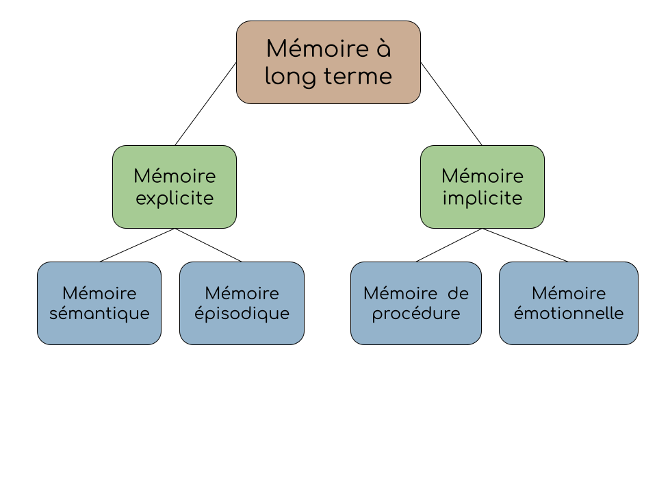

La mémoire est un concept vaste et complexe. Les experts postulent des théories et créent des modèles dans l'objectif d'améliorer notre compréhension de la mémoire, mais il reste beaucoup à découvrir.
Il existe quatre types de mémoires :
À l'opposé, les mémoires implicites sont difficiles à expliquer. Par exemple, une mémoire de procédure (comme jouer le piano) ne se transmet pas par des mots. Il faut apprendre à jouer en pratiquant l'instrument lui-même. Similairement, une mémoire émotionnelle est ressentie, mais difficile à exprimer en mots. Elle est alors classée en tant que mémoire implicite. C'est la façon que tu te sens face à une situation ou à une personne spécifique.
Instruction : Lis chaque mise en situation et sélectionne le type de mémoire qui y correspond.
En prenant un test, tu te souviens du fait que la formule chimique de l'eau est H2O.
Quand tu rentres chez toi après une longue journée au travail, ton chien adorable t'accueille en remuant la queue. Tu te sens alors heureux et calme.
Quand tu étais un enfant, tu te promenais souvent en bicyclette. Durant quelques années, tu décides de faire partie de l'armée canadienne, puis tu ne fais plus de vélo. À ton retour, tu n'as aucun problème à te souvenir comment faire cette activité.
Meloche, C. (2020). Psychologie HHG4MI-11. Recueil inédit, CCFO.